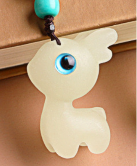

×

Đây là con hươu hong có cao cổ :V
Hươu nói nó sẽ đến với Duyên vào ngày 22 tháng 12 :D
Nếu Duyên cố gắng vượt qua được kỳ thi này dù có lảnh thêm cái cặp đi chăn nữa thì nó cũng sẽ lết tới :))))
*chọc Duyên vui thôi thấy Duyên stress quá không biết làm gì để bớt stress hết còn cách này nè :< *